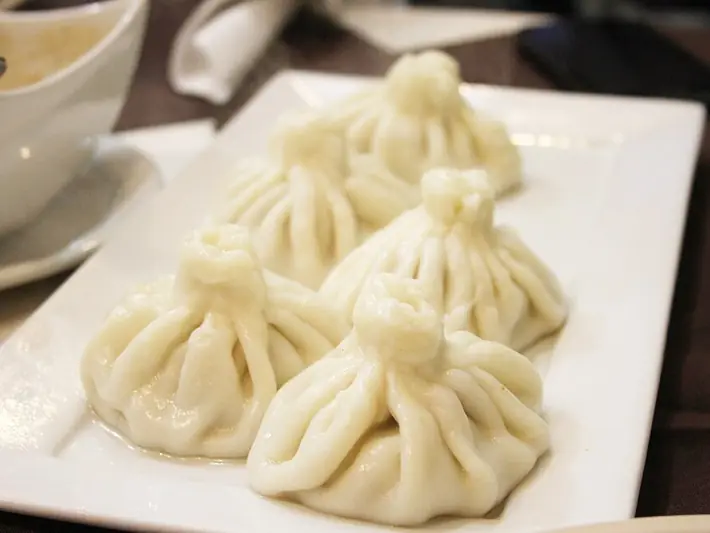

Фото: Sandra C from Canada, CC BY-SA 2.0

Ленивые хинкали
Рулет из теста с сочным фаршем, нарезанный и тушённый в сковороде
80 мин4 порц.758 ккал на порциюБ 33 · Ж 34 · У 79Кавказская кухня
Продукты на 4 порц.
- Мука пшеничная2,5 стак.
- Вода550 мл
- Соль2 ч. л.
- Говяжий фарш500 г
- Лук репчатый2 шт
- Кинза0,5 пучка
- Перец чёрный молотый0,5 ч. л.
- Морковь1 шт
- Томатная паста1 ст. л.
- Растительное масло2 ст. л.
Как готовить
- Замесите из муки, 200 мл воды и щепотки соли крутое тесто, 10 минут. Накройте и оставьте на 20 минут.
- Для начинки смешайте фарш с одной тёртой луковицей, рубленой кинзой, солью, перцем и 50 мл холодной воды, чтобы фарш стал сочным.
- Раскатайте тесто в тонкий пласт 2 мм, распределите фарш ровным слоем, оставив 2 см у края. Сверните плотным рулетом и нарежьте кусками по 3-4 см.
- В широкой сковороде с высокими бортами обжарьте на масле второй лук и тёртую морковь 5 минут на среднем огне, добавьте томатную пасту и жарьте 1 минуту.
- Поставьте кусочки рулета срезом вверх плотно друг к другу на овощи.
- Влейте 300 мл горячей воды, чтобы рулетики были в ней наполовину. Накройте крышкой и тушите на слабом огне 30-35 минут, пока тесто не станет мягким.
Совет. Классические хинкали лепят мешочками и варят, а ленивые делают втрое быстрее. Самый сочный фарш получается из смеси говядины и баранины пополам.